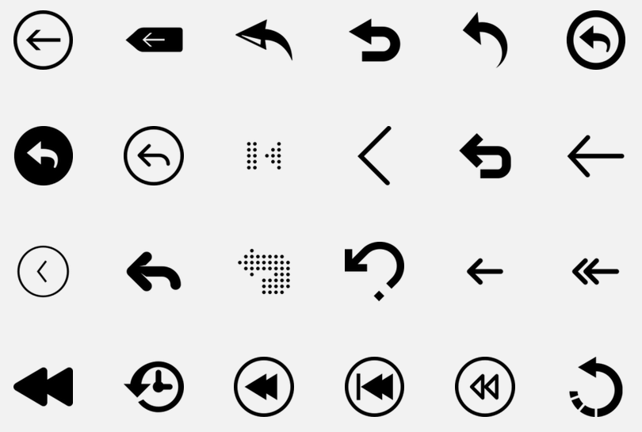
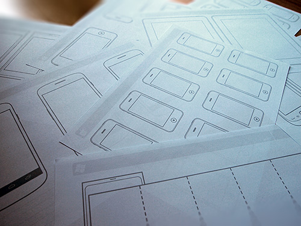
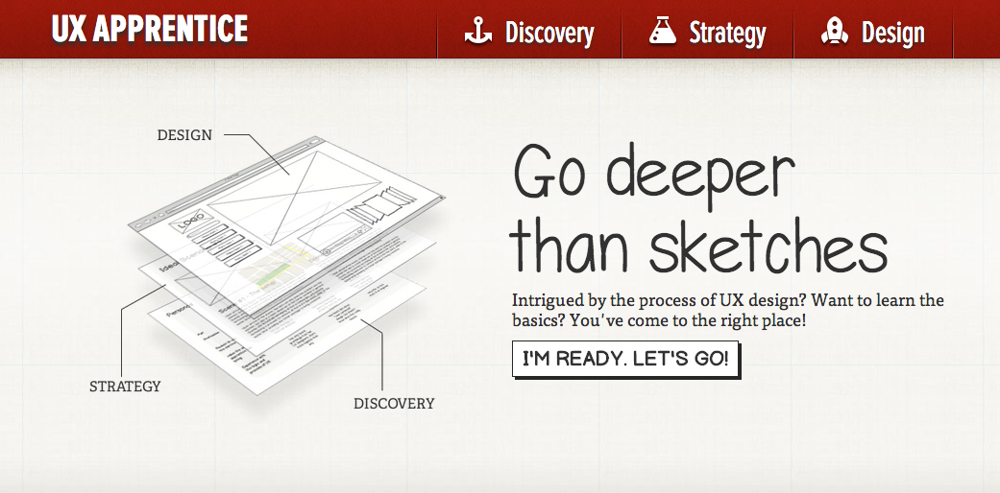
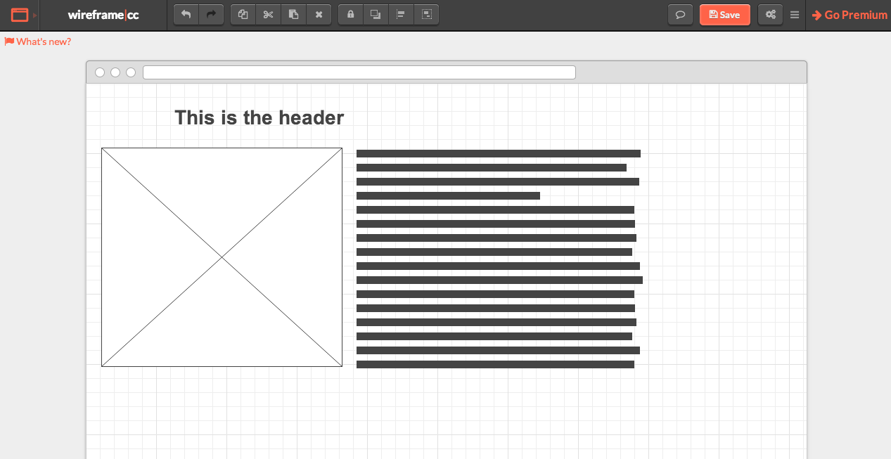

Prototypes
Clinton McKay
Contents
What is a Prototype?
A prototype is like a working wireframe. It should have most or all of the functionality of the following:
- Wireframe
- Annotations
- Site structure (or sitemap)
- Interactivity (at least navigation)
A good prototype should help you tell the story of how your proposed design would look and function.
Things to Avoid
- Using actual content (this is a waste of time)
- Writing unnecessary scripts or programs
- Unnecessary fidelity
- Getting attached


Tools
Each tool will offer some tutorials and online training. Well-established tools like Axure have large communities you can join to ask questions and see examples of new work.
Use the down arrow to see more tools.
The Noun Project
Thousands of symbols for everything you can think of--great for icons, all available for free with attribution (or through subscription/purchase if you don't want to attribute the designer).
Paper Templates
From SmashingMagazine.com
UX Apprentice
Free User Experience Design workshop from Balsamiq
Simple Wireframes Online

Wireframe.cc
Free Prototyping Tools
There are probably hundreds of free web applications that can help you with all or part of the prototyping process.
Lists of free tools are available from speckboy.com and 1stwebdesigner.com.
Suggestions and Examples from Projects by:
Emma Fagergren
Stephanie Poppe
Wenyang Dong
Michael Stallings
CJ Yang
Stephen Miller
M.S. Candidates in HCI Design
Icons from The Noun Project
Arrow by Mister Pixel
Tools by Luboš Volkov
Thank You
Feel free to contact me with any questions about HCI, UX Design, Programming, or Web development.
If your question is easy, I'll answer it. If it's not, I'll forward it to someone smarter.